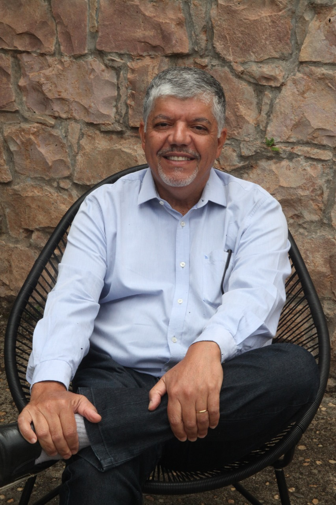

Graduado pela Faculdade de Odontologia de Lins – FOL.
Especialista em Endodontia pela USP – Bauru.
Especialista em Ortodontia e Ortopedia Facial pela UNESP – Araraquara.
Membro da Associação Brasileira de Ortodontia – ABOR.
Consultório Especializado em Ortodontia em São Carlos, São Paulo, desde 1994.
Prof. do Curso de especialização em Ortodontia e Ortopedia Funcional dos Maxilares – EAP – APCD Araraquara. Equipe Prof Tatsuko Sakima.
Prof. dos Cursos de Ortodontia e Ortopedia Facial dos Maxilares pelo ICMDS – Lisboa e Porto Portugal.
Consultório Especializado em Ortodontia em São Carlos, São Paulo, desde 1994.
Prof. do Curso de Especialização em Ortodontia UFSCar – Universidade Federal de São Carlos.
Prof. do Curso de Especialização em Ortodontia Estudare – Ribeirão Preto.
Membro do Grupo SBG de Ortodontia.